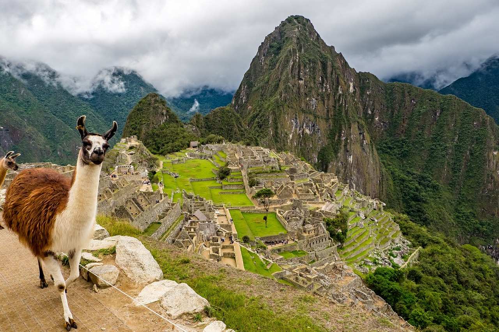

MACHU PICHU


Machu Picchu es el nombre contemporáneo que se da a una llaqta —antiguo poblado incaico andino— construida antes del siglo XV, ubicada en la Cordillera Oriental del sur de Perú, en la cadena montañosa de Los Andes a 2430 metros sobre el nivel del mar. Está ubicada en la región Cusco, provincia de Urubamba, distrito de Machupicchu, sobre el Valle Sagrado de los Incas, a 80 kilómetros al noroeste de la ciudad de Cusco, ciudad del Perú y por donde fluye el río Urubamba, que atraviesa la cordillera y se origina un cañón con clima de montaña tropical. Según muchos estudiosos su nombre original habría sido Llaqtapata.